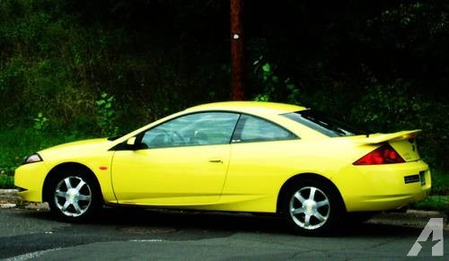
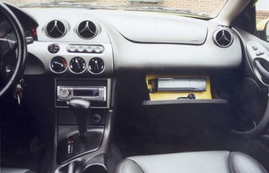
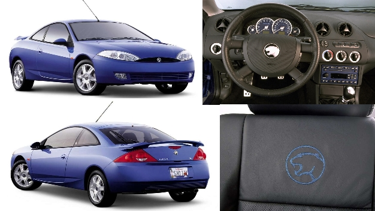
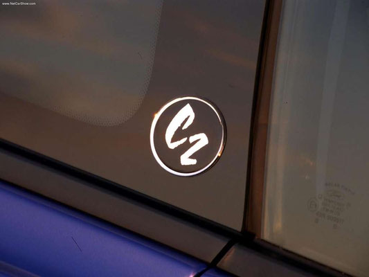
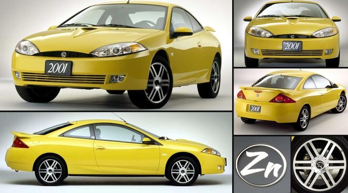
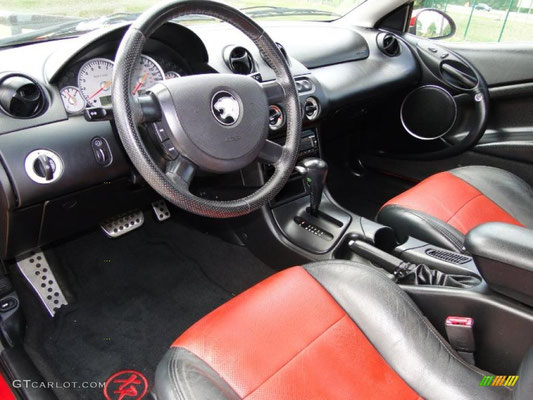
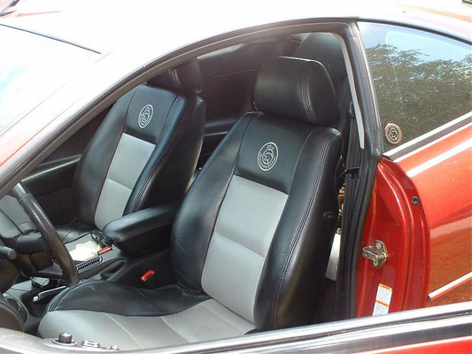
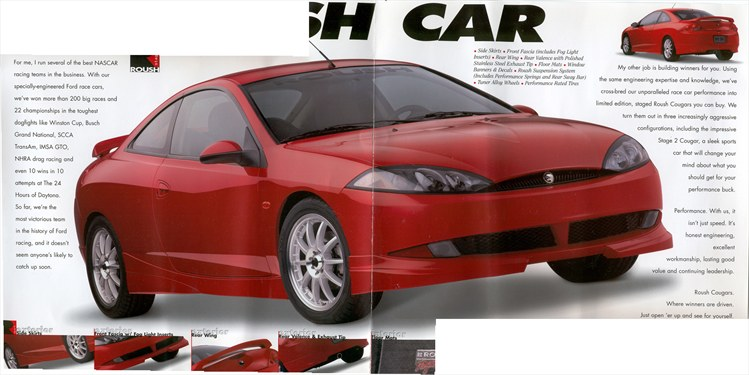
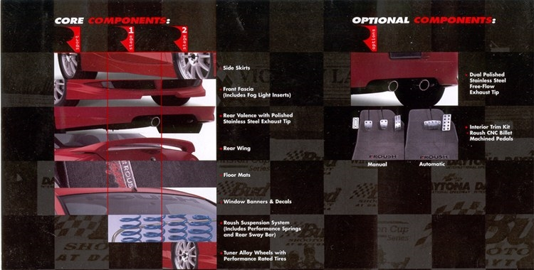

ULTIME VERSIONI SPECIALI
Tra il 2000 e il 2002, esclusivamente per il mercato nordamericano, Mercury introdusse numerosi pacchetti speciali caratterizzati da combinazioni dedicate di colori, finiture e accessori.
A partire dal 2001 la Cougar ricevette un aggiornamento estetico identificato internamente come C2 (Cougar 2). Ad eccezione della Special Edition del 2000, tutte le versioni speciali successive si basarono proprio su questo restyling.
MERCURY COUGAR - SPECIAL EDITION
Nel 2000, ancora basata sulla piattaforma C1 (Cougar 1), venne introdotta la Cougar Special Edition.
L'allestimento era caratterizzato dall'esclusiva colorazione Zinc Yellow (Giallo Zinco) e da un nuovo interno in pelle nera con cuciture gialle e logo Cougar ricamato sui sedili.
All'interno, la precedente finitura argentata del cruscotto lasciava spazio a una più elegante soluzione in tinta unita, mentre il vano autoradio veniva aggiornato per consentire l'installazione di unità compatibili con lo standard 2 DIN.
Esternamente la vettura si distingueva per un alettone posteriore basso e pronunciato, oltre che per i caratteristici loghi Cougar gialli applicati al centro dei cerchi in lega originali.


MERCURY COUGAR - C2
Dal 2001 al 2002 fu disponibile la Cougar C2 (Cougar 2), ovvero il restyling ufficiale della seconda generazione.
Le nuove colorazioni disponibili comprendevano French Blue, Silver Frost e Vibrant White, tutte abbinate a interni caratterizzati da dettagli e finiture blu.
Tra le principali novità figuravano il nuovo volante derivato dalla Ford Mondeo ST220, il tachimetro a sfondo blu con scritta Cougar e un nuovo impianto stereo con caricatore da sei CD, anch'esso caratterizzato da illuminazione blu.
I sedili adottavano un nuovo design in pelle nera con cuciture blu e logo Cougar ricamato. Scompariva inoltre la precedente plastica argentata della plancia, sostituita da una più moderna finitura in tinta unita.
Anche l'estetica esterna venne aggiornata. I paraurti anteriore e posteriore ricevettero nuovi dettagli, comparvero nuovi cerchi in lega, un piccolo spoiler posteriore a filo e una nuova griglia anteriore a nido d'ape con logo in stile cromato.
È interessante notare come la griglia a nido d'ape fosse già utilizzata sulle Cougar europee, mentre i modelli americani precedenti adottavano una mascherina a listelli verticali con logo Cougar centrale al posto dell'ovale Ford.
Sul piccolo vetro laterale posteriore compariva il logo circolare C2, mentre sul retro era presente il tradizionale emblema Mercury, già utilizzato sulle versioni americane standard. Le Cougar europee, invece, conservavano esclusivamente il marchio Ford.


MERCURY COUGAR - ZN
Nel 2001 debuttò negli Stati Uniti la particolare versione ZN.
Anche questa variante era disponibile nella colorazione Zinc Yellow e adottava i nuovi interni in pelle nera con cuciture gialle e logo Cougar ricamato.
Le differenze estetiche comprendevano i paraurti aggiornati della serie C2, una particolare presa d'aria Visteon applicata al cofano, nuovi cerchi in lega con dettagli neri e logo Cougar centrale, oltre a uno spoiler posteriore più pronunciato.
La griglia anteriore manteneva il disegno a nido d'ape con logo cromato.
Sul piccolo vetro laterale posteriore trovava posto il logo circolare ZN, mentre posteriormente era presente il classico emblema Mercury.

MERCURY COUGAR - XR
Nel 2002 venne proposta la versione speciale XR.
Era disponibile nelle colorazioni Nero e XR Racing Red, abbinate a esclusivi interni neri e rossi con finiture dedicate.
Tra gli optional più caratteristici figuravano i nuovi cerchi metallizzati da 17 pollici, riconoscibili per gli inserti neri presenti nella parte interna delle razze.
Sul piccolo vetro laterale posteriore era applicato il logo circolare XR in rosso, mentre sul retro rimaneva il tradizionale marchio Mercury.

MERCURY COUGAR - 35TH ANNIVERSARY
Per celebrare il trentacinquesimo anniversario del modello Cougar, Mercury realizzò una speciale versione commemorativa destinata all'anno modello 2002.
Le colorazioni disponibili erano Laser Red, French Blue, Satin Silver e Black.
La maggior parte degli esemplari era equipaggiata con interni in pelle caratterizzati da inserti centrali argentati sui sedili.
La vettura adottava inoltre i nuovi cerchi da 17 pollici condivisi con la versione XR, ma privi delle finiture nere presenti sulle razze interne.

MERCURY COUGAR - ROUSH EDITION
Tra il 1999 e il 2000 venne commercializzata la rarissima Roush Edition, realizzata in collaborazione con Roush Industries.
Disponibile principalmente nelle colorazioni rosso, bianco e argento, questa versione si distingueva immediatamente per il body kit dedicato composto da paraurti specifici, minigonne laterali e numerosi dettagli estetici esclusivi.
Le modifiche non si limitavano all'aspetto esteriore. La Roush Edition introduceva infatti aggiornamenti anche all'assetto e all'impianto di scarico, enfatizzando ulteriormente il carattere sportivo della vettura.
Con appena 112 esemplari prodotti nell'arco di due anni, la Roush Edition è oggi considerata la Mercury Cougar più rara e ricercata dai collezionisti.


Le informazioni riportate in questa pagina provengono da documentazione storica, materiale promozionale dell'epoca e fonti specializzate dedicate alla Mercury Cougar. Molte di queste versioni speciali furono prodotte in quantità limitate e destinate esclusivamente al mercato nordamericano, rendendo oggi particolarmente difficile reperire informazioni complete e fotografie originali.